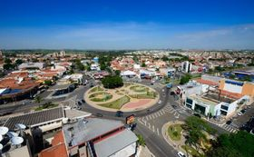

Sumaré is a Brazilian municipality in the state of São Paulo. I like Sumaré because it is a city that has evolved over time yet retained its welcoming essence, offering tree-lined squares, opportunities for nature walks, and a unique atmosphere—not to mention being the famous "City of Orchids.".
Sumaré has grown a lot in recent years, but preserves some cozy features, such as tree-lined public squares, places for hiking and living spaces , the weather is also very warm sometimes.
